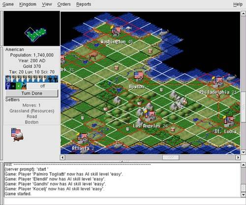

| [ Team LiB ] |
|
6.1 Studying CasesNormal practice in this book has been to intersperse case studies with philosophy. But in this chapter we'll begin by looking at several Unix designs that exhibit transparency and discoverability, and attempt to draw lessons from them only after all have been presented. Each major point of the analysis in the latter half of this chapter draws on several of these, and the arrangement avoids forward references to case studies the reader hasn't seen yet. 6.1.1 Case Study: audacityFirst, we'll look at an example of transparency in UI design. It is audacity, an open-source editor for sound files that runs on Unix systems, Mac OS X, and Windows. Sources, downloadable binaries, documentation, and screen shots are available at the project site <http://audacity.sourceforge.net/>. This program supports cutting, pasting, and editing of audio samples. It supports multitrack editing and mixing. The UI is superbly simple; the sound waveforms are shown in the audacity window. The image of the waveform can be cut and pasted; operations on that image are directly reflected in the audio sample as soon as they are performed. Figure 6.1. Screen shot of audacity.
Multitrack editing is supported in the simplest possible way; the screen splits into multiple per-track displays in a spatial relationship that conveys their concurrency and makes it easy to match features by inspection. Tracks can be dragged right or left with the mouse to change their relative timing. Several features of this UI are subtly excellent and worthy of emulation: the large, easily visible and clickable operation buttons with distinguishing colors, the presence of an undo command that removes most of the risk from experimentation, the volume slider that makes softness/loudness visually obvious in its shape. But these are details. The central virtue of this program is that it has a superbly transparent and natural user interface, one that erects as few barriers between the user and the sound file as possible. 6.1.2 Case Study: fetchmail's -v optionfetchmail is a network gateway program. Its main purpose is to translate between POP3 or IMAP remote-mail protocols and the Internet's native SMTP protocol for email exchange. It is in extremely widespread use on Unix machines that use intermittent SLIP or PPP connections to Internet service providers, and as such probably touches an appreciable fraction of the Internet's mail traffic. fetchmail has no fewer than 60 command-line options (which, as we'll establish later in this book, is probably too many), and a number of other options that are settable from the run-control file but not from the command line. Of all these, the most important—by far—is -v, the verbose option. When -v is on, fetchmail dumps each one of its POP, IMAP, and SMTP transactions to standard output as they happen. A developer can actually see the code doing protocol with remote mailservers and the mail transport program it forwards to, in real time. Users can send session transcripts with their bug reports. Example 6.1 shows a representative session transcript. Example 6.1 An example fetchmail -v transcript.
fetchmail: 6.1.0 querying hurkle.thyrsus.com (protocol IMAP)
at Mon, 09 Dec 2002 08:41:37 -0500 (EST): poll started
fetchmail: running ssh %h /usr/sbin/imapd
(host hurkle.thyrsus.com service imap)
fetchmail: IMAP< * PREAUTH [42.42.1.0] IMAP4rev1 v12.264 server ready
fetchmail: IMAP> A0001 CAPABILITY
fetchmail: IMAP< * CAPABILITY IMAP4 IMAP4REV1 NAMESPACE IDLE SCAN
SORT MAILBOX-REFERRALS LOGIN-REFERRALS AUTH=LOGIN
THREAD=ORDEREDSUBJECT
fetchmail: IMAP< A0001 OK CAPABILITY completed
fetchmail: IMAP> A0002 SELECT "INBOX"
fetchmail: IMAP< * 2 EXISTS
fetchmail: IMAP< * 1 RECENT
fetchmail: IMAP< * OK [UIDVALIDITY 1039260713] UID validity status
fetchmail: IMAP< * OK [UIDNEXT 23982] Predicted next UID
fetchmail: IMAP< * FLAGS (\Answered \Flagged \Deleted \Draft \Seen)
fetchmail: IMAP< * OK [PERMANENTFLAGS
(\* \Answered \Flagged \Deleted \Draft \Seen)]
Permanent flags
fetchmail: IMAP< * OK [UNSEEN 2] first unseen in /var/spool/mail/esr
fetchmail: IMAP< A0002 OK [READ-WRITE] SELECT completed
fetchmail: IMAP> A0003 EXPUNGE
fetchmail: IMAP< A0003 OK Mailbox checkpointed, no messages expunged
fetchmail: IMAP> A0004 SEARCH UNSEEN
fetchmail: IMAP< * SEARCH 2
fetchmail: IMAP< A0004 OK SEARCH completed
2 messages (1 seen) for esr at hurkle.thyrsus.com.
fetchmail: IMAP> A0005 FETCH 1:2 RFC822.SIZE
fetchmail: IMAP< * 1 FETCH (RFC822.SIZE 2545)
fetchmail: IMAP< * 2 FETCH (RFC822.SIZE 8328)
fetchmail: IMAP< A0005 OK FETCH completed
skipping message esr@hurkle.thyrsus.com:1 (2545 octets) not flushed
fetchmail: IMAP> A0006 FETCH 2 RFC822.HEADER
fetchmail: IMAP< * 2 FETCH (RFC822.HEADER {1586}
reading message esr@hurkle.thyrsus.com:2 of 2 (1586 header octets)
fetchmail: SMTP< 220 snark.thyrsus.com ESMTP Sendmail 8.12.5/8.12.5;
Mon, 9 Dec
2002 08:41:41 -0500
fetchmail: SMTP> EHLO localhost
fetchmail: SMTP< 250-snark.thyrsus.com
Hello localhost [127.0.0.1], pleased to meet you
fetchmail: SMTP< 250-ENHANCEDSTATUSCODES
fetchmail: SMTP< 250-8BITMIME
fetchmail: SMTP< 250-SIZE
fetchmail: SMTP> MAIL FROM:<mutt-dev-owner@mutt.org> SIZE=8328
fetchmail: SMTP< 250 2.1.0 <mutt-dev-owner@mutt.org>... Sender ok
fetchmail: SMTP> RCPT TO:<esr@localhost>
fetchmail: SMTP< 250 2.1.5 <esr@localhost>... Recipient ok
fetchmail: SMTP> DATA
fetchmail: SMTP< 354 Enter mail, end with "." on a line by itself
#
fetchmail: IMAP< )
fetchmail: IMAP< A0006 OK FETCH completed
fetchmail: IMAP> A0007 FETCH 2 BODY.PEEK[TEXT]
fetchmail: IMAP< * 2 FETCH (BODY[TEXT] {6742}
(6742 body octets) *********************.**************************.
********************************.************************.***********
**********.***********************.***************
fetchmail: IMAP< )
fetchmail: IMAP< A0007 OK FETCH completed
fetchmail: SMTP>. (EOM)
fetchmail: SMTP< 250 2.0.0 gB9ffWo08245 Message accepted for delivery
flushed
fetchmail: IMAP> A0008 STORE 2 +FLAGS (\Seen \Deleted)
fetchmail: IMAP< * 2 FETCH (FLAGS (\Recent \Seen \Deleted))
fetchmail: IMAP< A0008 OK STORE completed
fetchmail: IMAP> A0009 EXPUNGE
fetchmail: IMAP< * 2 EXPUNGE
fetchmail: IMAP< * 1 EXISTS
fetchmail: IMAP< * 0 RECENT
fetchmail: IMAP< A0009 OK Expunged 1 messages
fetchmail: IMAP> A0010 LOGOUT
fetchmail: IMAP< * BYE hurkle IMAP4rev1 server terminating connection
fetchmail: IMAP< A0010 OK LOGOUT completed
fetchmail: 6.1.0 querying hurkle.thyrsus.com (protocol IMAP)
at Mon, 09 Dec 2002 08:41:42 -0500: poll completed
fetchmail: SMTP> QUIT
fetchmail: SMTP< 221 2.0.0 snark.thyrsus.com closing connection
fetchmail: normal termination, status 0
The -v option makes what fetchmail is doing discoverable (by letting you see the protocol exchanges). This is immensely useful. I considered it so important that I wrote special code to mask account passwords out of -v transaction dumps so that they could be passed around and posted without anyone having to remember to edit sensitive information out of them. This turned out to be a good call. At least eight out of ten problems reported get diagnosed within seconds of a knowledgeable person's eyes seeing a session transcript. There are several knowledgeable people on the fetchmail mailing list—in fact, because most bugs are easy to diagnose, I seldom have to handle them myself. Over the years, fetchmail has acquired a reputation as a rather bulletproof program. It can be misconfigured, but it very seldom outright breaks. Betting that this has nothing to do with the fact that the exact circumstances of eight out of ten bugs are rapidly discoverable would not be smart. We can learn from this example. The lesson is this: Don't let your debugging tools be mere afterthoughts or treat them as throwaways. They are your windows into the code; don't just knock crude holes in the walls, finish and glaze them. If you plan to keep the code maintained, you're always going to need to let light into it. 6.1.3 Case Study: GCCGCC, the GNU C compiler used on most modern Unixes, is perhaps an even better example of engineering for transparency. GCC is organized as a sequence of processing stages knit together by a driver program. The stages are: preprocessor, parser, code generator, assembler, and linker. Each of the first three stages takes in a readable textual format and emits a readable textual format (the assembler has to emit and the linker to accept binary formats, pretty much by definition). With various command-line options of the gcc(1) driver, you can see not just the results after C preprocessing, after assembly generation, and after object code generation—but you can also monitor the results of many intermediate steps in parsing and code generation.
There are many benefits of this organization. One that is particularly important for GCC is regression testing.[3] Because most of the various intermediate formats are textual, deviations from expected results in a regression test are easily spotted and analyzed using simple textual diff operations on the intermediate results; there is no need for specialist dump-analysis tools that may well harbor their own bugs, and in any case would represent an additional maintenance burden.
The design pattern to extract from this example is that the driver program has monitoring switches that merely (but sufficiently) expose the textual data flows among the components. As with fetchmail's -v option, these options are not afterthoughts; they are designed in for discoverability. 6.1.4 Case Study: kmailkmail is the GUI mailreader distributed with the KDE environment. The kmail UI is tastefully and well designed, with many good features including automatic display of enclosed images in a MIME multipart and support for PGP key encryption/decryption. It is friendly to end-users—my beloved but nontechie wife uses and enjoys it. Many mail user agents make one gesture in the direction of discoverability by having a command that toggles display of all the mail headers, as opposed to a select few like From and Subject. The UI of kmail takes this a long step further. A running kmail displays status notifications in a one-line subwindow at the bottom of its window, in small type over a steel-gray background clearly modeled on the Netscape/Mozilla status bar. When you open a mailbox, for example, the status bar displays counts of total and unread messages. The visual presentation is unobtrusive; it is easy to ignore the notifications, but also easy to focus on them if you want to. Figure 6.2. Screen shot of kmail.
The kmail GUI is good user-interface design. It's informative, but not distracting; it gets around the reason we adduce in Chapter 11 that the best policy for Unix tools operating normally is usually silence. The authors showed excellent taste in borrowing the look and feel of the browser status bar. But the extent of the kmail developers' tastefulness will not become clear until you have to troubleshoot an installation that is having trouble sending mail. If you watch closely during the send, you will observe that each line of the SMTP transaction with the remote mail transport is echoed into the kmail status bar as it happens. The kmail developers neatly avoid a trap that often makes GUI programs like kmail a terrible pain in a troubleshooter's fundament. Most design teams with kmail's objectives would have suppressed those messages entirely, fearing that they would give Aunt Tillie a touch of the vapors that would drive her back to the meretricious pseudo-simplicity of a Windows box. Instead, they designed for transparency—they made the transaction messages show, but also made them visually easy to ignore. By getting the presentation right, they managed to please both Aunt Tillie and her geeky nephew Melvin who fixes her computer problems. This was brilliant; it's a technique other GUI interfaces could and should emulate. Ultimately, of course, the visibility of those messages is good for Aunt Tillie, because they mean Melvin is far less likely to throw up his hands in frustration while trying to solve her email problems. The lesson here is clear. Dumbing down your UI is only the half-smart thing to do. The really smart thing is to find a way to leave the details accessible, but make them unobtrusive. 6.1.5 Case Study: SNGThe program sng translates between PNG format and an all-text representation of it (SNG or Scriptable Network Graphics format) that can be examined and modified with an ordinary text editor. Run on a PNG file, it produces an SNG file; run on an SNG file, it recovers the equivalent PNG. The transformation is 100% faithful and lossless in both directions. In syntactic style, SNG resembles CSS (Cascading Style Sheets), another language for controlling presentation of graphics; this makes at least a gesture in the direction of the Rule of Least Surprise. Here is a test example: Example 6.2 An SNG Example.
#SNG: This is a synthetic SNG test file
# Our first test is a paletted (type 3) image.
IHDR: {
width: 16;
height: 19;
bitdepth: 8;
using color: palette;
with interlace;
}
# Sample bit depth chunk
sBIT: {
red: 8;
green: 8;
blue: 8;
}
# An example palette: three colors, one of which
# we will render transparent
PLTE: {
(0, 0, 255)
(255, 0, 0)
"dark slate gray",
}
# Suggested palette
sPLT {
name: "A random suggested palette";
depth: 8;
(0, 0, 255), 255, 7;
(255, 0, 0), 255, 5;
( 70, 70, 70), 255, 3;
}
# The viewer will actually use this...
IMAGE: {
pixels base64
2222222222222222
2222222222222222
0000001111100000
0000011111110000
0000111001111000
0001110000111100
0001110000111100
0000110001111000
0000000011110000
0000000111100000
0000001111000000
0000001111000000
0000000000000000
0000000110000000
0000001111000000
0000001111000000
0000000110000000
2222222222222222
2222222222222222
}
tEXt: { # Ordinary text chunk
keyword: "Title";
text: "Sample SNG script";
}
# Test file ends here
The point of this tool is to enable users to edit various obscure PNG chunk types that are not necessarily supported by conventional graphics editors. Rather than writing special-purpose code to grovel through the PNG binary format, the user can simply flip an image into an all-text representation, edit that, and massage it back. Another potential application is in making images amenable to version control; under most version-control systems, text files are much easier to manage than binary blobs, and diff operations on SNG representations actually have some possibility of yielding useful information. The gains here go beyond the time not spent writing special-purpose code for manipulating binary PNGs, however. The code of the sng program itself is not especially transparent, but it promotes transparency in larger systems of programs by making the entire contents of PNGs discoverable. 6.1.6 Case Study: The Terminfo DatabaseThe terminfo database is a collection of descriptions of video-display terminals. Each entry describes the escape sequences that perform various manipulations on the terminal screen, such as inserting or deleting lines, erasing from the cursor position to end of line or screen, or beginning and ending screen highlights such as reverse video, underline, or blink. The terminfo database is primarily used by the curses(3) libraries. These underlie the "roguelike" interface style we discuss in Chapter 11, and some very widely used programs such as mutt(1), lynx(1), and slrn(1). Though the terminal emulators such as xterm(1) that run on today's bitmapped displays all have capabilities that are minor variations on those of the ANSI X3.64 standard and the venerable VT100 terminal, there is still enough variation that hardwiring ANSI capabilities into applications would be a bad idea. Terminfo is also worth studying because problems that are logically similar to the one it addressed arise constantly in managing other kinds of peripheral hardware that doesn't have a standard way to report their own capabilities. The design of terminfo benefits from experience with an earlier capability format called termcap. The database of termcap descriptions lived in a textual format in one big file, /etc/termcap; though this format is now obsolete, your Unix system almost certainly includes a copy. Normally, the key used to look up your terminal type entry is the environment variable TERM, which for purposes of this case study is set by magic.[4] Applications that use terminfo (or termcap) pay a small penalty in startup lag; when the curses(3) library initializes itself, it has to look up the entry corresponding to TERM and load the entry into memory.
Experience with termcap showed that the startup penalty was dominated by the time required to parse the textual representation of capabilities. Accordingly, terminfo entries are binary structure dumps that can be marshaled and unmarshaled more quickly. There is a master textual format for the entire database, the terminfo capability file. That file (or individual entries) can be compiled to binary form with the terminfo compiler tic(1); binary entries can be decompiled to the editable text format by infocmp(1). The design superficially contradicts the advice we gave in Chapter 5 against binary caches, but this is actually the extreme case in which that's a good tactic. Edits to the text masters are very rare—in fact, Unixes normally ship with the terminfo database precompiled and the text master serving primarily as documentation. Thus, the synchronization and inconsistency problems that would normally militate against this approach almost never arise. The designers of terminfo could have optimized for speed in a second way. The entire database of binary entries could have been put in some kind of big opaque database file. What they actually did instead was more clever and more in the Unix spirit. Terminfo entries live in a directory hierarchy, usually on modern Unixes under /usr/share/terminfo. Consult the terminfo(5) man page to find the location on your system. If you look in the terminfo directory, you'll see subdirectories named by single printable characters. Under each of these are the entries for each terminal type that has a name beginning with that letter. The goal of this organization was to avoid having to do a linear search of a very large directory; under more modern Unix file systems, which represent directories with B-trees or other structures optimized for fast lookup, the subdirectories won't be necessary.
Thus, the cost of opening a terminfo entry is two file system lookups and a file open. But since mining the same entry from one big database would have required a lookup and open for the database, the incremental cost for terminfo's organization is at most one file system lookup. Actually, it's less than that; it's the cost difference between one file system lookup and whatever retrieval method the one big database would have used. This is probably marginal, and quite tolerable once per application at startup time. Terminfo uses the file system itself as a simple hierarchical database. This is a superb bit of constructive laziness, obeying the Rule of Economy and the Rule of Transparency. It means that all the ordinary tools for navigating, examining and modifying the file system can be used to navigate, examine, and modify the terminfo database; no special ones (other than tic(1) and infocmp(1) for packing and unpacking the individual records) need to be written and debugged. It also means that work on speeding up database access would be work on speeding up the file system itself, tuning that would benefit many more applications than just users of curses(3). There is one additional advantage of this organization that doesn't come up in the terminfo case; you get to use Unix's permissions mechanism rather than having to invent your own access-control layer with its own bugs. This falls out as a consequence of adopting the "everything is a file" philosophy of Unix rather than trying to fight it. The terminfo directory layout is rather space-inefficient on most Unix file systems. The entries are usually between 400 and 1400 bytes long, but file systems normally allocate a minimum of 4K for every nonempty disk file. The designers accepted this cost for the same reason they chose a packed binary format, to cut the startup latency of terminfo-using programs to a minimum. Disk capacity for constant price has exploded over a thousandfold since, tending to vindicate that decision. The contrast with the formats used by the Microsoft Windows registry files is instructive. Registries are property databases used by both Windows itself and applications. Each registry lives in one big file. Registries contain a mix of text and binary data that requires specialized editing tools. The one-big-file approach leads, among other things, to the notorious 'registry creep' phenomenon; average access time rises without bound as new entries are added. Because there is no standard API for editing the registry provided by the system, applications use ad-hoc code to edit it themselves, making it notoriously subject to corruption that can lock up the entire system. Using the Unix file system as a database is a tactic other applications with simple database requirements might do well to emulate. Good reasons not to do it are more likely to have to do with the database keys not naturally looking like filenames than they are with any performance problems. In any case, it's the sort of good fast hack that can be very useful in prototyping. 6.1.7 Case Study: Freeciv Data FilesFreeciv is an open-source strategy game inspired by Sid Meier's classic Civilization II. In it, each player begins with a wandering band of neolithic nomads and builds a civilization. Player civilizations may explore and colonize the world, fight wars, engage in trade, and research technological advances. Some players may actually be artificial intelligences; solitaire play against these can be challenging. One wins either by conquering the world or by being the first player to reach a technology level sufficient to get a starship to Alpha Centauri. Sources and documentation are available at the project site <http://www.freeciv.org/>. Figure 6.3. Main window of a Freeciv game. In Chapter 7 we'll exhibit the Freeciv strategy game as an example of client-server partitioning, with the server maintaining shared state and the client concentrating on GUI presentation. But this game has another notable architectural feature; much of the game's fixed data, rather than being wired into the server code, is expressed in a property registry read in by the game server at startup time. The game's registry files are written in a textual data-file format that assembles text strings (with associated text and numeric properties) into various internal lists of important data (such as nations and unit types) in the game server. The minilanguage has an include directive, so game data can be broken up into semantic units (different files) that are each separately editable. This design choice has been carried through to such an extent that it's possible to define new nations and new unit types simply by creating new declarations in the data files, without touching the server code at all. The Freeciv server's startup parsing has an interesting feature that creates something of a conflict between two of Unix's design rules, and is therefore worth closer examination. The server ignores property names it doesn't know how to use. This makes it possible to declare properties that the server doesn't yet use without breaking the startup parsing. It means that development of the game data (policy) and the server engine (mechanism) can be cleanly separated. On the other hand, it also means startup parsing won't catch simple misspellings of attribute names. This quiet failure seems to violate the Rule of Repair. To resolve this conflict, notice that it's the server's job to use the registry data, but the task of carefully error-checking that data could be handed off to another program to be run by human editors each time the registry is modified. One Unix solution would be a separate auditing program that analyzes either a machine-readable specification of the ruleset format or the source of the server code to determine the set of properties it uses, parses the Freeciv registry to determine the set of properties it provides, and prepares a difference report.[5]
The aggregate of all Freeciv data files is functionally similar to a Windows registry, and even uses a syntax resembling the textual portions of registries. But the creep and corruption problems we noted with the Windows registry don't crop up here because no program (either within or outside the Freeciv suite) writes to these files. It's a read-only registry edited only by the game's maintainers. The performance impact of data-file parsing is minimized because for each file the operation is performed only once, at either client or server startup time. |
| [ Team LiB ] |
|